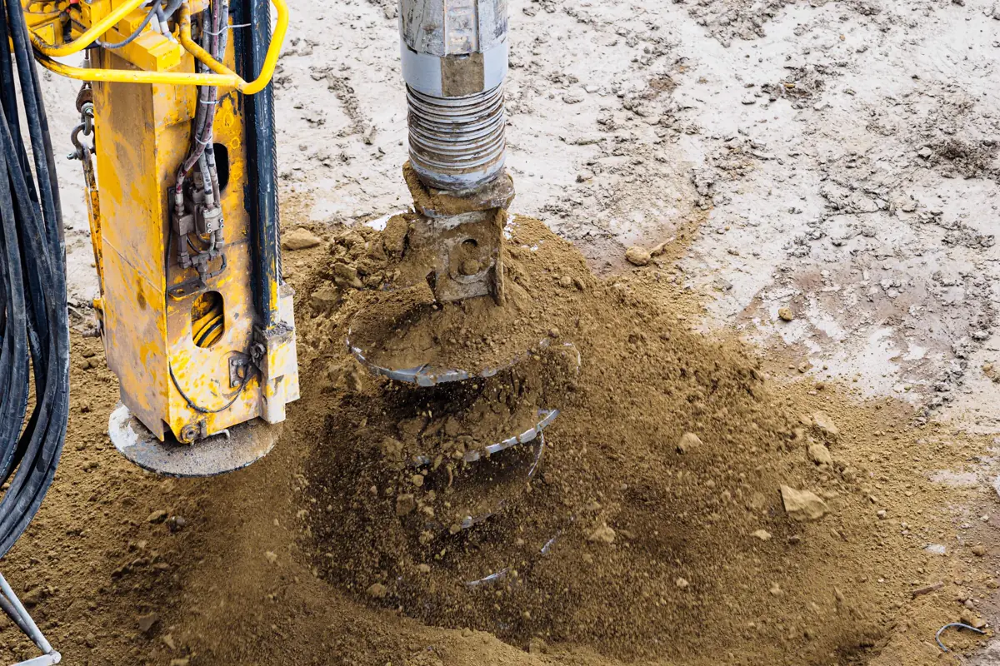
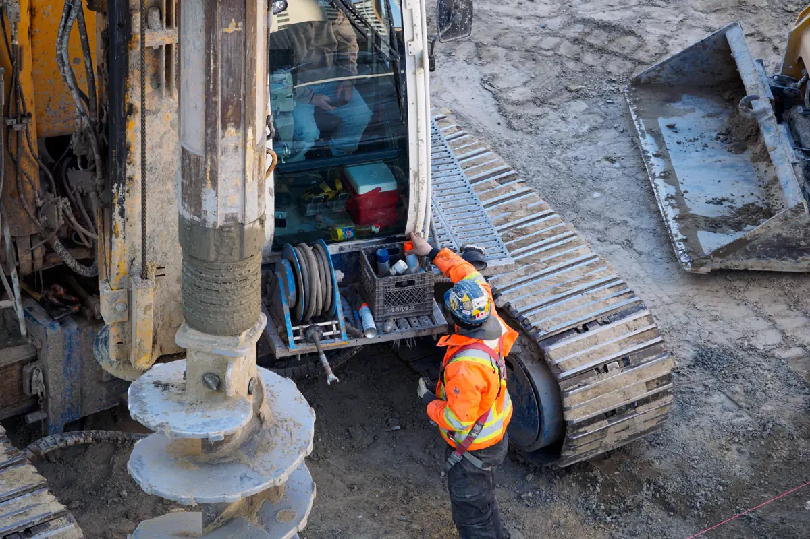
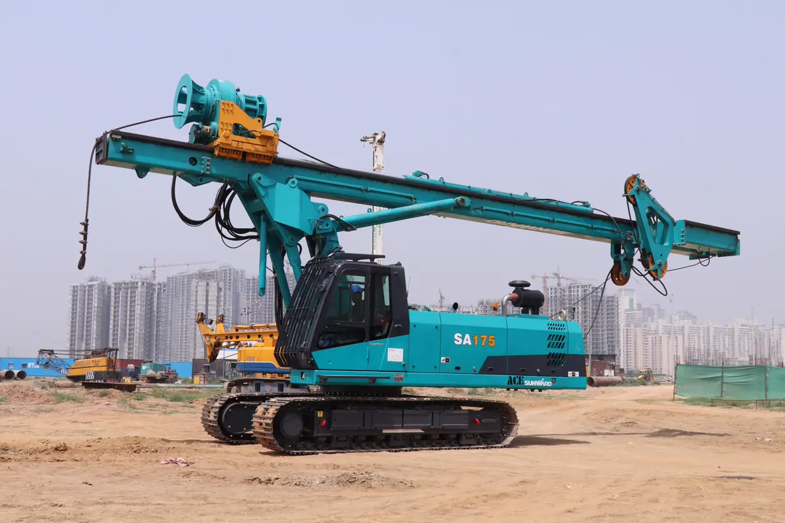

Por que a sondagem vem antes do projeto
A fundação é a parte da obra que ninguém vê e a mais cara de corrigir. Sem sondagem, o projetista chuta — e chuta para cima, encarecendo a obra, ou para baixo, arriscando recalque. A sondagem SPT (NBR 6484) mede, metro a metro, a resistência do solo à cravação de um amostrador padrão, coleta amostras e registra o nível d’água. É o dado de entrada do projeto estrutural e de fundação.
Na Grande Vitória isso pesa mais do que em muitas cidades: há aterros sobre antigos mangues em Vitória, camadas de argila mole na planície costeira de Vila Velha e da Serra e rocha rasa nos morros. Dois terrenos na mesma rua podem pedir fundações completamente diferentes.
Equipe técnica pronta para atender toda a demanda em Vitória, Vila Velha, Serra, Cariacica e região: o orçamento, o agendamento e o acompanhamento ficam centralizados na Axial Engenharia, do primeiro contato à entrega do documento.

Quantos furos de sondagem
A NBR 8036 define o mínimo pela área de projeção da edificação. A posição dos furos sai do levantamento topográfico e do projeto de implantação.
| Área de projeção | Número mínimo de furos |
|---|---|
| Até 200 m² | 2 |
| De 200 a 400 m² | 3 |
| Até 1.200 m² | 1 para cada 200 m² |
| De 1.200 a 2.400 m² | 1 para cada 400 m² que exceder 1.200 m² |
| Acima de 2.400 m² | Conforme o plano particular da construção |

O que vem no boletim de sondagem
- Índice NSPT a cada metro — o número de golpes para cravar o amostrador;
- Classificação das camadas — areia, argila, silte, aterro, com cor e compacidade ou consistência;
- Nível d’água medido no furo;
- Profundidade atingida e critério de parada;
- Locação dos furos em planta, com cota da boca do furo.

Da sondagem à fundação
A sondagem SPT é feita com equipamento leve, montado em tripé. A perfuratriz de grande porte entra depois, na execução de estacas — e é a sondagem que diz se a solução é sapata, radier, estaca hélice ou estaca cravada. Em galpão metálico, ela define os blocos das colunas; em sobrado em estrutura metálica, permite aproveitar a leveza da estrutura em fundação mais simples. Quando a obra tem vizinhos próximos e estaca cravada, a vistoria cautelar entra antes da primeira estaca.
Perguntas frequentes sobre sondagem de solo
Preciso de sondagem para construir uma casa?
É altamente recomendável. Em terreno de aterro ou de solo mole, comum em partes de Vitória, Vila Velha e Serra, a sondagem evita recalque e trincas. Mesmo em casa térrea, ela costuma custar pouco perto da economia que gera no projeto de fundação.
Quantos furos de sondagem são necessários?
A NBR 8036 pede no mínimo dois furos para área de projeção até 200 m², três entre 200 e 400 m², e um para cada 200 m² até 1.200 m². Áreas maiores seguem a regra de um furo a cada 400 m² excedentes e o plano particular da obra.
Qual a profundidade da sondagem?
A profundidade é definida pelos critérios da NBR 8036 e pelo tipo de obra, e vai até atingir camada resistente compatível com as cargas previstas. Prédio alto e solo mole pedem furos mais profundos.
Quanto tempo leva a sondagem SPT?
Uma casa com dois ou três furos costuma ser sondada em um ou dois dias, e o boletim sai em poucos dias úteis. O prazo cresce com o número de furos e a profundidade.
O que é o índice NSPT?
É o número de golpes de um martelo padrão necessários para cravar os últimos 30 centímetros do amostrador em cada metro. Quanto maior o NSPT, mais resistente o solo naquela camada.
Sondagem de solo na Grande Vitória
Sondagem SPT para casas, prédios, galpões e obras industriais:
Vai construir e ainda não sabe a fundação?
Mande a localização, a área da construção e o número de pavimentos. Retornamos com furos, prazo e valor.